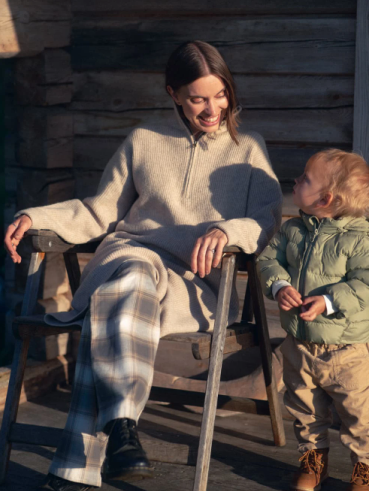
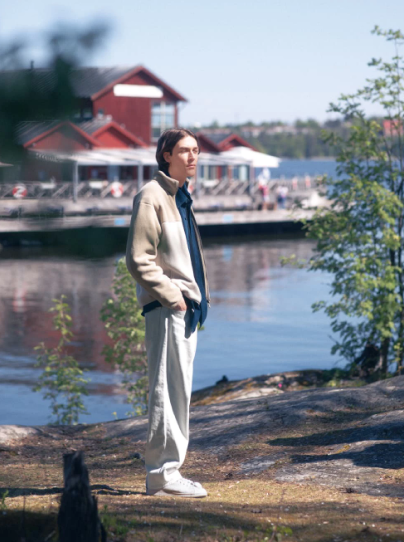

Coziness and Comfort in Stockholm
Stockholm, a Nordic city where beauty and functionality are rooted in everyday life.
Serving as inspiration for this season's collection, this is a place where people are in close contact with nature.
The Alexander Havelda & Magda Marnell Family
Alexander writes scripts for feature films and drama series, while his wife Magda is the co-founder of design studio Matsson Marnell, which focuses on furniture and interiors. “While living in Stockholm, we often missed nature,” says the couple, who spend every weekend in the woods east of Uppland. We visited them at their small cabin hidden in the wilderness of the forest in Urnatur, bout a three-hour drive from Stockholm. Dressed in earth tones, the family looks in harmony with their surroundings.
Scriptwriter, Designer and Co-Founder of Studio Matsson Marnell
“It feels more country than urban,” Magda says with a smile, wearing a wonderfully soft souffle knit dress. Her son wore a thick parka with a zipper.
Alexander collects wooden branches for family bonfire night. “I like how this ombre plaid jacket has a fresh modern design, not too casual like the American style,” he says. Lightweight and soft, this double-face knit doesn't itch, so you can feel comfortable and confident.
The eldest daughter, Dasha, wore a boxy cotton jacket. The collar is kurduroi while the lining has a fresh plaid print. Her sister Milada was running around in a quilted jacket accented with piping and a kurduroi collar.
Magda chose a premium down jacket. The high-performance insulation layer with 750+ fill power makes it light and warm. Alexander wears a quilted PUFFTECH parka jacket. With no seams, the closed-panel design keeps out the wind and rain while the insulation layer stays inside the garment.
Levi Di Marco & Indra Herö Wide Family
Brand Director of Hem, Film Director
Hem is probably the leading interior brand in Sweden today. Levi, a brand director, loves spending time with his family in the park near their home. “This is one of our favorite parks in the area, the view is beautiful,” Levi explains. “In 2018, when UNIQLO first opened in Stockholm, I directed the campaign movie!” says director Indra, who is Levi's partner. The PUFFTECH jacket is lightweight and soft, with a high-performance filling that pairs well with a pair of wide-leg pants.
This vest has exceptional warmth and lightness thanks to its all-over synthetic design. It feels soft against the skin and features multiple pockets, providing invaluable comfort when temperatures tend to fluctuate throughout the day.
Shown here in off-white, Indra walks through Stockholm's Old Town with little Bruno, who is one and a half years old. Ice blue cashmere knit turtleneck, one of UNIQLO's colors this season.
This Milano Rib Knit Cardigan is an elegant piece that maintains its silhouette and has just the right amount of stretch. Wear it with matching outfits alongside a machine-washable cashmere turtleneck and wide-leg pants.
This fashionable two-tone fleece is made from a lightweight yet dense material that provides warmth and comfort. Axel pairs it with a cozy, stretchy blue shirt and straight-leg white denim pants for classic Nordic style.
Axel Wahl & Julia Malmquist
Axel, a graphic designer, is also the founder of the Wawa Print shop, specializing in creating colorful illustrated clothing. Julia, his high school classmate, now works as a photographer. On weekends, the couple makes the thirty-minute trip from Stockholm to the island of Stora Fjäderholmen. Easy access from the city makes it a common weekend destination. Julia wore a water- and wind-resistant coat while exploring the beach. She says that the interconnected hem and sleeves make “the arms move more freely”.
